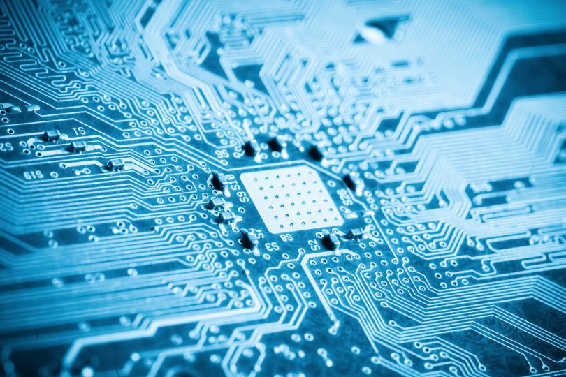

La informática, también conocida como computación, se encarga de estudiar los métodos y técnicas para gestionar información de manera automatizada. Esto incluye el uso de dispositivos electrónicos y programas que permiten realizar tres funciones básicas: entrada de datos, procesamiento y salida de resultados. La informática abarca varias subdisciplinas, que incluyen: Ciencias de la Computación: Enfocada en los fundamentos teóricos de la computación. Ingeniería Informática: Aplicación de principios informáticos para resolver problemas prácticos. Sistemas de Información: Gestión y análisis de datos en organizaciones. Tecnología de la Información: Uso de tecnología para gestionar información. Ingeniería de Software: Diseño y desarrollo de software
La programación consiste en el proceso de crear instrucciones que una computadora puede ejecutar para realizar tareas específicas, utilizando distintos lenguajes y paradigmas que organizan la lógica y la estructura de los programas. Conceptos Básicos Algoritmo: Conjunto de pasos ordenados que resuelven un problema o realizan una tarea concreta. Programa: Implementación de uno o varios algoritmos en un lenguaje de programación que la computadora pueda ejecutar. Lenguajes de programación: Sistemas formales para escribir instrucciones, como Python, Java, C++, JavaScript, entre otros. Cada lenguaje tiene sintaxis (reglas de escritura) y semántica (significado de las instrucciones). Variable: Espacio en memoria que almacena datos que pueden cambiar durante la ejecución. Constante: Valor fijo que no cambia durante la ejecución del programa.